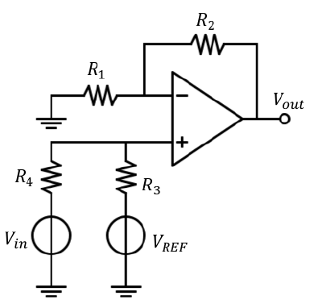

19. Signalni ADC uchun tayyorlash: himoya, kuchaytirish, siljitish
1. Nega signalni tayyorlash kerak
16b-darsdan: SNRq formulasi signal ADC ning to'liq shkalasini egallaganda to'g'ri. Signal shkalaning yarmini egallasa, 6 dB (1 bit) yo'qotiladi. Shuning uchun signal ADC oralig'iga aniq moslanadi:
- Kuchaytirish (yoki susaytirish): signal oralig'ini ADC oralig'iga teng qilish.
- Sathni siljitish (level shift): masalan, bipolyar (−1…+1 V) signalni unipolyar (0…10 V) ADC ga moslash.
ADC oralig'i ikki xil bo'ladi: unipolyar (0…S, masalan 0–5 V, 0–10 V) yoki bipolyar (−S/2…+S/2, masalan ±5 V, ±10 V).
2. Himoya
Tashqaridan keladigan signalda statik zaryad, xalaqit yoki tasodifiy yuqori kuchlanish bo'lishi mumkin. Himoya sxemasi kirishni xavfsiz chegarada ushlaydi:
- Diodli cheklagich (clamp): diodlar kirishni manba kuchlanishlari VDD+ va VDD− orasida ushlaydi (4-darsdagi diod).
- Zener diodlar: kirishni Zener kuchlanishi + Vγ bilan cheklaydi.
- Ketma-ket rezistor R himoya ishlaganda tokni cheklaydi.
Muhim: tizim o'chiq bo'lganda VDD = 0 V. Shunda ham kirishga signal kelsa, himoya kerak.
3. Kuchaytirgich: gain va offset
Kerakli kuchaytirgich kirish va chiqishni to'g'ri chiziq bilan bog'laydi:
Vout = G · Vin + Voff,out yoki Vout = G · (Vin + Voff,in)- Gain: G = (ADC oralig'i) / (signal oralig'i) = ΔVout / ΔVin.
- Chiqish offseti: o'rtalarni moslash. Voff,out = (ADC o'rtasi) − G · (signal o'rtasi).
- Kirish offseti: Voff,in = Voff,out / G (kuchaytirishdan oldin qo'shiladigan kuchlanish).
093-savol
- G = 10 V / 2 V = 5.
- Signal o'rtasi 0 V, ADC o'rtasi 5 V → Voff,out = 5 − 5 · 0 = 5 V.
- Voff,in = 5 / 5 = +1 V. Tekshiruv: (−1 + 1) · 5 = 0 V ✓, (+1 + 1) · 5 = 10 V ✓.
Rasmiy javob: gain 5, input offset +1 V.
4. Operatsion kuchaytirgich: ikki oddiy qoida
Operatsion kuchaytirgich (op-amp) uchburchak belgili, ikki kirishli (+ va −) kuchaytirgich. Teskari aloqa (chiqishdan − kirishga rezistor) bilan ishlatilganda ideal op-amp uchun ikki qoida yetadi:
- Kirishlarga tok kirmaydi.
- Kirishlar kuchlanishi teng: V− = V+.
Bulardan ikki asosiy sxema chiqadi:
| Sxema | Kuchaytirish |
|---|---|
| Invertlamaydigan (non-inverting): signal + ga, R1 − dan yerga, R2 chiqishdan − ga | Vout = V+ · (1 + R2/R1) |
| Invertlovchi (inverting): signal R1 orqali − ga, R2 chiqishdan − ga, + yerda | Vout = −Vin · R2/R1 |
Superpozitsiya: + kirishga ikki manba ikki rezistor orqali ulangan bo'lsa, V+ ikki hissa yig'indisi: har manba boshqasi 0 deb olinganda beradigan kuchlanish (2-darsdagi kuchlanish bo'lgich).
051-savol

Spetsifikatsiya: Vin = −1 V → Vout = 0 V; Vin = +1 V → Vout = 10 V (gain 5, 093 dagi kabi).
+ kirish (superpozitsiya): Vin R4 orqali, VREF R3 orqali keladi:
V+ = Vin · R3/(R3 + R4) + VREF · R4/(R3 + R4)- Vin = −1 V da Vout = 0 bo'lishi uchun V+ = 0: −1 · R3 + 10 · R4 = 0 → R4/R3 = 1/10. Masalan R4 = 1 kΩ, R3 = 10 kΩ.
- Vin = +1 V da: V+ = 1 · 10/11 + 10 · 1/11 = 20/11 ≈ 1.82 V.
- Invertlamaydigan kuchaytirish: 1.82 · (1 + R2/R1) = 10 → 1 + R2/R1 = 5.5 → R2/R1 = 4.5. Masalan R2 = 4.5 kΩ, R1 = 1 kΩ.
Rasmiy javob bilan bir xil.
5. Slayddagi to'liq mashq (Exercise 2 va 3)
Namuna olish chastotasi:
- Tc + Ta = 1.7 μs → Fs ≤ 588 kHz umumiy → 4 kanal: har biriga ≤ 147 kHz.
- Nyquist: Fs ≥ 2 · 15 = 30 kHz. Oraliq: 30–147 kHz. Maksimal oversampling K = 147/30 = 4.9.
Kuchaytirgich:
- G = 5 V / 1 V = 5.
- Chiqish offseti: 2.5 − 5 · 1.5 = −5 V; kirish offseti −5/5 = −1 V. Tekshiruv: (1 − 1) · 5 = 0 ✓, (2 − 1) · 5 = 5 ✓.
- Sxemada: 1 + R2/R1 = 5 → R2/R1 = 4; R1 ning pastki uchi yerga emas, Vp ga ulanadi: −Vp · R2/R1 = −5 V → Vp = 1.25 V.
Anti-aliasing filtri (16b-dars formulasi):
- Fs = 30 kHz da: birinchi alias 15 kHz, ya'ni aynan band chetida → cheksiz qutb kerak, imkonsiz.
- Fs = 147 kHz da: Np = 60 / [20 · lg((147 − 15)/15)] = 60 / 18.9 = 3.18 → 4 qutb.
- 4 qutb bilan Fs ni kamaytirsa ham bo'ladi: Fs = 15 · (1 + 1060/80) ≈ 99.4 kHz.
Apertura jitteri (S/H namuna olish lahzasidagi tasodifiy kechikish, 7-bo'lim): xato ΔV = tJA · (signal o'zgarish tezligi).
- ADC dagi sinus: amplituda 2.5 V, 15 kHz → eng katta tezlik 2π · 15 kHz · 2.5 V ≈ 0.24 V/μs.
- Ruxsat etilgan xato: 0.1% · 5 V = 5 mV → tJA ≤ 5 mV / 0.24 V/μs ≈ 21 ns.
Bitlar soni: SNRq = SNRa = 60 dB → 6N + 1.76 = 60 → N = 9.7 → 10 bit.
Exercise 3, umumiy SNR: jitter, aliasing va kvantlash xatolari har biri 0.001 (60 dB). SNRt = −20 · lg(0.001 · √3) = 55.2 dB, ENOB = (55.2 − 1.76)/6.02 ≈ 8.9 bit. (Bu yerda xatolar kvadratlari qo'shilgan: √(A1² + A2² + A3²), bu slayddagi quvvat yig'indisi bilan bir xil.)
6. Differensial signallar
Bir uchli (single-ended) signal yerga nisbatan o'lchanadi: simga tushgan xalaqit signalga qo'shilib qoladi. Differensial signal ikki simdagi kuchlanishlar farqi: xalaqit ikkala simga bir xil tushadi (umumiy rejim, common mode) va farqda yo'qoladi.
- Differensial signal xalaqitga sezgir emas va o'zi ham xalaqit tarqatmaydi.
- Ularni instrumental kuchaytirgich (instrumentation amplifier) bilan kuchaytiriladi: kirish qarshiligi katta, umumiy rejimni yo'qotadi.
7. MUX va S/H xatolari
| Blok | Xato | Sababi va ta'siri |
|---|---|---|
| MUX | Gain xatosi | Yopiq kalit qarshiligi RON yuklama RL bilan bo'lgich hosil qiladi → kuchaytirish < 1 |
| Offset | Ochiq kalitlarning qochqin toklari Ioff yig'indisi chiqishda kuchlanish beradi | |
| Feedthrough, band | Kalit sig'imi CDS orqali boshqa kanallar sizib o'tadi; RON·CP past chastota filtri bandni cheklaydi | |
| S/H | Apertura kechikishi va jitteri | Kalit ochilish lahzasi kechikadi va tebranadi: ΔV = tJA · SRmax |
| Pedestal | Kalit yopilganda zaryad kondensatorga sizadi → kichik sakrash | |
| Decay (droop) | Ushlab turishda kondensator RL va Ioff orqali sekin zaryadsizlanadi | |
| Feedthrough | Ushlab turishda kirish signali parazit sig'im orqali sizadi |
- MUX filtrdan keyin turishi kerak: filtr oldingi qiymatlarni "eslaydi", uni kanallar orasida bo'lishib bo'lmaydi (kanallar aralashib ketadi).
- Ko'p kanalli tizimda S/H va ADC umumiy bo'lishi mumkin, agar har o'zgartirish oldingisiga bog'liq bo'lmasa. Tracking ADC ni ishlatmang: u oldingi qiymatdan boshlaydi.
- S/H kondensatorini kattalashtirish: decay va pedestal kamayadi, lekin olish vaqti (Tacq) uzayadi va band torayadi.
O'zingizni tekshiring
Javob
G = 5/2 = 2.5; o'rtalar: 2.5 − 2.5 · 1 = 0 → offset 0.Javob
Signal −5…+5 V. G = 5/10 = 0.5 (susaytirish), chiqish offseti 2.5 − 0.5 · 0 = +2.5 V (kirish offseti +5 V).Javob
0.5 · (1 + 4) = 2.5 V.Javob
Tracking oldingi qiymatdan qadamlab yuradi; kanal almashganda yangi qiymat butunlay boshqa bo'lishi mumkin va 2N takt kerak bo'ladi. O'zgartirishlar bir-biridan mustaqil bo'lishi kerak.Yangi atamalar
| Atama | Inglizchasi | Ma'nosi |
|---|---|---|
| Signalni tayyorlash | signal conditioning | Signalni ADC ga moslash |
| Unipolyar / bipolyar | unipolar / bipolar | 0…S / −S/2…+S/2 oraliq |
| Sathni siljitish | level shift, offset | Doimiy kuchlanish qo'shish |
| Cheklagich | clamp, amplitude limiting | Kirishni xavfsiz oraliqda ushlash |
| Operatsion kuchaytirgich | operational amplifier (op-amp) | Ikki kirishli kuchaytirgich, teskari aloqa bilan |
| Invertlamaydigan / invertlovchi | non-inverting / inverting | 1 + R2/R1 / −R2/R1 |
| Differensial signal | differential signal | Ikki sim farqi |
| Umumiy rejim | common mode | Ikkala simga bir xil tushgan qism |
| Instrumental kuchaytirgich | instrumentation amplifier | Differensial signal uchun aniq kuchaytirgich |
| Apertura jitteri | aperture jitter | Namuna lahzasining tebranishi |
| Pedestal, decay, feedthrough | pedestal, decay (droop), feedthrough | S/H xatolari |
📝 Konspekt (daftarga yozib oling)
- Signal ADC shkalasini to'liq egallashi kerak (aks holda SNRq yo'qoladi).
- Himoya: diod clamp, Zener, ketma-ket R.
- MUX: RON → gain, Ioff → offset, CDS → feedthrough. MUX filtrdan keyin. Ko'p kanalga tracking ADC yaramaydi.
- S/H: apertura jitteri, pedestal, decay, feedthrough.
- Javoblar: 093 → G = 5, kirish offseti +1 V; 051 → R4/R3 = 1/10, V+ = 1.82 V, R2/R1 = 4.5; slayd mashqi → 30–147 kHz, G = 5, offset −1 V, 4 qutb, 21 ns, 10 bit, SNRt 55.2 dB, ENOB 8.9.